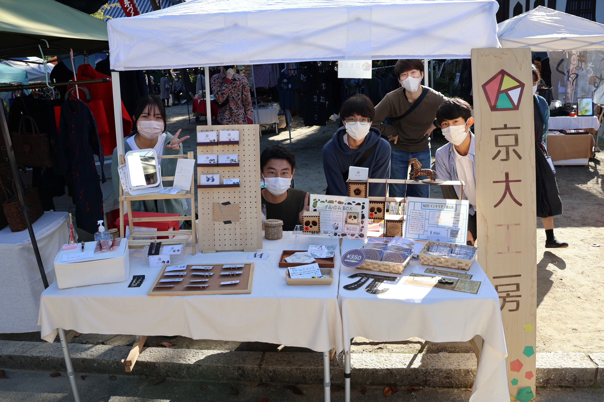

百万遍さんの手作り市Handmade Market

毎月15日に百万遍知恩寺で開催される手作り市に出店しています
NF祭NF Festival

1年を通して自分たちで制作、発注した京大らしいユニークな商品を販売しています
関連団体・施設Facilities
活動場所:KUEPとは
KUEPは京都大学産学連携本部が運営する起業家育成に必要な様々な設備を提供する施設です。
レーザーカッターや3Dプリンタを用いて試作を行っています。
活動場所：BoCSとは
BoCSは京大生が運営する、サークル同士の交流拠点です。
東一条通沿いに拠点を持ち、様々な団体が活動を行っています。
京大工房もBoCSに加盟しています。